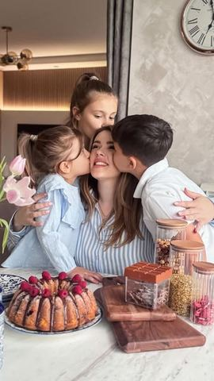

Dan za mame i uspomene koje ostaju

Moja beleška
SačuvanoMiris kolača koji se peče u rerni 🍰, dečje ruke umrljane čokoladom 🍫 i smeh koji ispunjava kuhinju 🥰 — baš kao vikendi koje sam provodila sa svojom mamom. Danas tu slatku tradiciju delim sa Lenom, Lukom i Kalinom. Srećan Dan majki svim mamama koje prave najlepše uspomene uz miris domaće radosti ❤️ @madamecocoserbia Imam sjajnu vest za vas! Iskoristite kod JELENA1000 za popust od 1000 RSD na kupovinu iznad 5000 RSD. Kod možete iskoristiti u radnjama, a važi do 22. maja. Čokoladni kuglof sa malinama 🍰
Sastojci
- Sastojci
Priprema
Puter umutiti sa šećerom (oko 2 minuta), dodati aromu vanile i potom jedno po jedno jaje, uz stalno mućenje. Dodati mleko, a zatim postepeno umešati brašno pomešano s praškom za pecivo i prstohvatom soli. Smesu podeliti na dva dela – u jedan dodati otopljenu belu, u drugi otopljenu crnu čokoladu. U kalup (podmazan i posut brašnom) sipati kašiku po kašiku naizmenično iz obe smese. Nakon svakog sloja dodati po šaku malina. Ponavljati dok ne utrošite svu smesu. Peći u prethodno zagrejanoj rerni na 165°C oko 50 minuta. Ostaviti da se prohladi pre vađenja iz kalupa. Po želji posuti šećerom u prahu ili preliti omiljenom čokoladom. Uživajte u našem predlogu za još slađi vikend 🥰 📍Beograd 📍Novi Sad 📍Niš 📍Kragujevac 📍Novi Pazar 📍Gornji Milanovac 📍Ub 📍Kraljevo 📍Subotica 📍Valjevo 📍Požarevac
Originalni opis sa Instagrama
Dan za mame i uspomene koje ostaju Miris kolača koji se peče u rerni 🍰, dečje ruke umrljane čokoladom 🍫 i smeh koji ispunjava kuhinju 🥰 — baš kao vikendi koje sam provodila sa svojom mamom. Danas tu slatku tradiciju delim sa Lenom, Lukom i Kalinom. Srećan Dan majki svim mamama koje prave najlepše uspomene uz miris domaće radosti ❤️ @madamecocoserbia Imam sjajnu vest za vas! Iskoristite kod JELENA1000 za popust od 1000 RSD na kupovinu iznad 5000 RSD. Kod možete iskoristiti u radnjama, a važi do 22. maja. Čokoladni kuglof sa malinama 🍰 Sastojci: • 270 g brašna • 1 ½ kašičica praška za pecivo • prstohvat soli • 120 g bele čokolade (istopljene) • 120 g crne čokolade (istopljene) • 170 g putera (sobne temperature) • 200 g šećera • 1 kašičica arome vanile • 4 jaja • 120 ml mleka • 120–200 g malina (uvaljati u malo brašna da ne potonu) Priprema: Puter umutiti sa šećerom (oko 2 minuta), dodati aromu vanile i potom jedno po jedno jaje, uz stalno mućenje. Dodati mleko, a zatim postepeno umešati brašno pomešano s praškom za pecivo i prstohvatom soli. Smesu podeliti na dva dela – u jedan dodati otopljenu belu, u drugi otopljenu crnu čokoladu. U kalup (podmazan i posut brašnom) sipati kašiku po kašiku naizmenično iz obe smese. Nakon svakog sloja dodati po šaku malina. Ponavljati dok ne utrošite svu smesu. Peći u prethodno zagrejanoj rerni na 165°C oko 50 minuta. Ostaviti da se prohladi pre vađenja iz kalupa. Po želji posuti šećerom u prahu ili preliti omiljenom čokoladom. Uživajte u našem predlogu za još slađi vikend 🥰 #DanMajki #PravljenoSLjubavlju #PorodičneTradicije #MadameCoco 📍Beograd 📍Novi Sad 📍Niš 📍Kragujevac 📍Novi Pazar 📍Gornji Milanovac 📍Ub 📍Kraljevo 📍Subotica 📍Valjevo 📍Požarevac